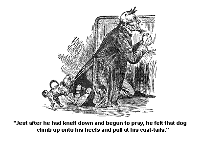
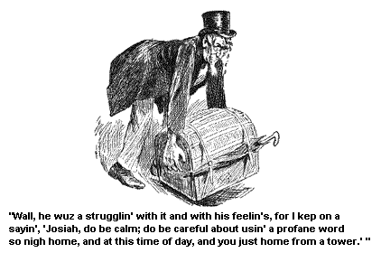
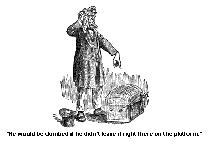
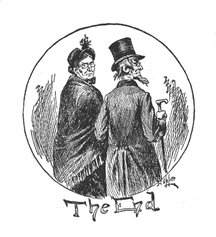

AN ACCIDENT WITH RESULTS.
Wall, it wuz on the very day before we laid out to leave for home. I wuz a settin' in my room a mendin' up a rip in my pardner's best coat, previous to packin' in his trunk, when all of a sudden Miss Flamm's hired girl came in a cryin', and sez I, "What is the matter?"
And sez she, "Ah! Miss Flamm has sent for you and Mr. Allen to come over there right away. There has been a axident."
"A axident!" sez I.
"Yes," sez she. "The little girl has got hurt, and they don't think she will live. Poor little pretty thing," sez the hired girl, and busted out a cryin' agin.
"How did she get hurt?" sez I, as I laid down the coat, and went to tyin' on my bunnet mekanically.
"Wall, the nurse had her out with the baby and the little boys. And we s'pose she had been drinkin' too much. We all knew she drinked, and she wuzn't in a condition to go out with the children this mornin', and Miss Flamm would have noticed it and kep' 'em in, but the dog wuz sick all night, and Miss Flamm wuz up with it most all night, and she felt wore out this mornin' with her anxtety for the dog, and her want of sleep, and so they went out, and it wuzn' more'n half an hour before it took place. She left the baby carriage and the little boys and girl in a careless place, not knowin' what she wuz about, and they got run over. The baby and the little boys wuzn't hurt much, but they think the little girl will die. Miss Flamm went right into a caniption fit," sez she, "when she wuz brung in."
"It is a pity she hadn't went into one before," sez I very dryly, dry as a chip almost. My axents wuz fairly dusty they wuz so dry. But my feelin's for Miss Flamm moistened up and melted down when I see her, when we went into the room. It didn't take us long for they are still to the tarven, and we met Josiah Allen at the door, so he went with us.
Yes, Miss Flamm felt bad enough, bad enough. She has got a mother's heart after all, down under all the strings and girtins, and laces, and dogs, etc., etc., that have hid it, and surrounded it. Her face wuz jest as white and deathly as the little girl's, and that wuz jest the picture of stillness and death. And I remembered then that I had heard that the little girl wuz her favorite amongst her children, whenever she had any time to notice 'em. She wuz a only daughter and a beauty, besides bein' smart.
The doctor had been there and done what he could, and go gone away. He said there wuz nothin' more to do till she came out of that stuper, if she ever did.
But it looked like death, and there Miss Flamm sot alone with her child, and her conscience. She wuzn't a cryin' but there wuz a look in her eyes, in her set white face that went beyond tears, fur beyond 'em. She gripped holt of my hand with her icy cold ones, and sez she, "Pray for me!" She wuz brung up a Methodist, and knew we wuz the same. My feelin's overcame me as I looked in her face and the child's, both lookin' like dyin' faces, and I sez with the tears a jest runnin' down my cleeks and a layin' my hand tender on her shoulder, "Is there anything I can do for you, you poor little creeter?"
"Pray for me," sez she agin, with her white lips not movin' in a smile, nor a groan.
Now my companion, Josiah Allen, is a class-leader, and though I say it that mebby shouldn't -- That man is able in prayer. He prays as if he meant what he said. He don't try to show off in oritory as so many do, or give the Lord information. He never sez, "Oh Lord, thou knowest by the mornin' papers, so and so." No, he prays in simple words for what he wants. And he always seems to feel that somebody is nigh to him, a hearin' him, and if it is best and right, his requests will be granted.
So I motioned for that man to kneel down by the bed and pray, which he did. He wuz to the fore side of the bed, and Miss Flamm and I on the other side. Wall, Josiah commenced his prayer, in a low earnest askin' voice, then all of a sudden he begun to hesitate, waver, and act dretful agitated. And his actions and agitations seemed to last for some time. I thought it wuz his feelin's overcomin' of him, and of course, my hand bein' over my eyes in a respectful, decent way, I didin't see nothin'.
But at last, after what wuz seemingly a great effort, he began to go on as usual agin. About that time I heard sunthin' hit the wall hard on the other side of the room, and I heard a yelp. But then everything wuz still and Josiah Allen made a good prayer. And before it wuz through Miss Flamm laid her head down onto my shoulder, and busted into tears.
And what wuz rooted up and washed away by them tears I don't know, and I don't s'pose anybody duz. Whether vanity, and a mistaken ambition, and the poor empty successes of a fashionable life wuz uprooted and floated away on the awakened, sweepin' tide of a mother's love and remorse; whether the dog floated down that stream, and low necked dresses, and high hazardus slippers, and strings for waists and corsets, and fashion, and folly, and rivalry, and waltzin', and glitter, and buttons, and show; whether they all went down that stream, swept along like bubbles on a heavin' tumultuous tide, I don't know, nor I don't s'pose anybody duz.
But any way, from that day on Miss Flamm has been a different woman. I stayed with her all that night and the next day, she a not leavin' the child's bed for a minute, and we a not gettin' of her to, much as we tried to; eatin' whatever we could make her eat right there by the bedside. And on the 2d day the doctor see a change in the child and she began to roust a little out of that stuper, and in a week's time, she wuz a beginnin' to get well.
We stayed on till she wuz out of danger and then we went home. But I see that she wuz to be trusted with her children after that. She dismissed that nurse, got a good motherly one, who she said would help her take care of the children for the future; only help her, for she should have the oversight of 'em herself, always.
The hired girl told me (Miss Flamm never mentioned it to me), and she wuz glad enough of it, that the dog wuz dead. It died the day the little girl wuz hurt. The hired girl said the doctor had told Miss Flamm, that it couldn't live long. But it wuzn't till we wuz on our way home that I found out one of the last eppisodes in that dog's life. You see, sick as that dog wuz, it wuz bound to bark at my pardner as long as it had a breath left in its body. And Josiah told me in confidence (and it must be kep', it is right that it should be); he said jest after he had knelt down and began to pray he felt that dog climb up onto his heels, and pull at his coat tails, and growl a low mad growl, and naw at 'em.

He tried to nestle round and get it off quietly but no, there it stood right onto Josiah Allen's heels, and hung on, and tugged at them coat-tails, and growled at 'em that low deep growl, and shook 'em, as if determined to worry 'em off. And there my companion wuz. He couldn't show his feelin's in his face; he had got to keep his face all right towards Miss Flamm. And his feelin's was rousted up about her, and he wuz a wantin', and knew he wuz expected, to have his words and manner soothin' and comfortin', and that dog a standin' on his heels and tearin' off his coat-tails.
What to do he didn't know. He couldn't stop his prayer on such a time as this and kill a dog, though he owned up to me that he felt like it, and he couldn't keep still and feel his coat-tails tore off of him, and be growled at, and shook, and pawed at all day. So he said after the dog had gin a most powerful tug, almost a partin' the skirts asunder from his coat, he drew up one foot carefully (still a keepin' his face straight and the prayer agoin') and brung it back sudden and voyalent, and he heard the dog strike aginst the opposite side of the room with one short, sharp yelp, and then silence rained down and he finished the prayer.
But he said, and owned it up to me, that it didn't seem to him so much like a religious exercise, as he could wish. It didn't seem to help his spiritual growth much, if any.
And I sez, "I should think as much," and I sez, "You wuz in a hard place, Josiah Allen."
And he sez, "It wuz the dumbest hard place any one wuz ever in on earth."
And I sez, "I don't know but it wuz." That man wuz to be pitied, and I told him so, and he acted real cheerful and contented at hearin' my mind. He owned up that he had dreaded tellin' me about it, for fear I would upbraid him. But, good land! I would have been a hard hearted creeter if I could upbraid a man for goin' through such a time as that. He said he thought mebby I would think it wuz irreverent or sunthin', the dog's actions, at such a time.
"Wall," sez I, "you didn't choose the actions, did you? It wuzn't nothin' you wanted."
"No," sez he feelin'ly. "Heaven knows I didn't. And I done the best I could," sez he sort a pitiful.
Sez I, "I believe you, Josiah Allen," and sez I warmly, "I don't believe that Alexander, or Cezar, or Grover Cleveland, could have done any better."
He brightened all up at this, he felt dretful well to think I felt with him, and my feelin's wuz all rousted up to think of the sufferin's he had went through, so we felt real well towards each other. Such is some of the comforts and consolations of pardners. Howsumever, the dog died, and I wuz kinder sorry for the dog. I think enough of dogs (as dogs) and always did. Always use 'em dretful well, only it mads me to have 'em put ahead of children, and sot up in front of 'em. I always did and always shall like a dog as a dog.
Wall, they say that when that dog died, Miss Flamm hardly inquired about it, she wuz so took up in gettin' acquainted with her own children. And I s'pose they improved on acquaintance, for they say she is jest devoted to 'em. And she got acquainted with G. Washington too, so they say. He wuz a stiddy, quiet man, and she had got to lookin' on him as her banker and business man. But they say she liked him real well, come to get acquainted with him. He always jest worshipped her, so they are real happy. There wuz always sunthin' kinder good about Miss Flamm.
Thos. J. is a carryin' on another lawsuit for her (more money that descended onto her from her father, or that ort to descend). And he is carryin' it stiddy and safe. It will bring Thomas Jefferson over 900 dollars in money besides fame, a hull lot of fame.
Wall, we sot sail for home in good spirits, and the noon train. And we reached Jonesville with no particular eppisodin' till we got to the Jonesville Depot.
I rather think Ardelia Tutt wrote a poem on the cars goin' home, though I can't say for certain.
She and Abram sot a few seats in front of us, and I thought I see a certain look to the backside of her head that meant poetry. It wuz a kind of a sot look, and riz up like. But I can't say for certain for she didn't have no chance to tell me about it. Abram looked down at her all the time as if he jest worshipped her. And she is a good little creeter, and will make him a happy wife; I don't make no doubt. As I said, the old lady is goin' to live with Susan. They went right on in the train, for Ardelia's home lays beyond Jonesville, and Abram wuz goin' home with her by Deacon Tutt's request. They are willin'.
Wall, we disembarked from the cars, and we found the old mair and the Democrat a waitin' for us. Thomas J. wuz a comin' for us, but had spraint his wrist and couldn't drive. Wall, Josia lifted our saddul bags in, and my umbrell, and the band box. But when he went to lift my trunk he faltered. It wuz heavy. I had got relicts from Mount McGregor, from the Battlefield, from the various springs, minerals, stuns, and things, and Josiah couldn't lift it.
What added to the hardness of the job, the handles had broken offen it, and he had to grip hold on it, by the might of his finger nails. It wuz a hard job, and Josiah's face got red and I felt, as well as see, that his temper wuz a risin'. And I sez, instinctively, "Josiah, be calm!" For I knew not what unguarded word he might drop as he vainly tried to grip hold on't, and it eluded his efferts and came down on the ground every time, a carryin' with it, I s'pose, portions of his fingernails, broke off in the fray.
Wall, he wuz a strugglin' with it and with his feelin's, for I kep' on a sayin', "Josiah, do be calm! Do be careful about usin' a profane word so nigh home and at this time of day, and you jest home from a tower."

And he kep' his feelin's nobly under control, and never said a word, only to wonder "what under the High Heavens a woman wanted to lug round a ton of stuns in her trunk for." And anon sayin' that he would be dumbed if he didn't leave it right there on the platform.

Savin' these few slight remarks that man nobly restrained himself, and lugged and lifted till the blood almost gushed through his bald head. And right in the midst of the fray, a porter came up and went to liftin' the trunk in the usual highheaded, haughty way Railroad officials have. But anon a change came over his linement. And as it fell back from his fingers to the platform for the 3d time, he broke out in a torrent of swearin' words dretful to hear.
I felt as if I should sink through the Democrat. But Josiah listened to the awful words with a warm glow of pleasure and satisfaction a beamin' from his face. I never saw him look more complacent. And as the man moistened his hands and with another frightful burst of profanity histed it into the end of the buggy.
Wall, I gin the man a few warnin' words aginst profanity, and Josiah gin him a quarter for liftin' in the trunk, he said, and we drove off in the meller glow of the summer sunset.
But it wuz duskish before we got to the turn of the road, and considerable dark before we got to the Corners. But we went on tbgough the shadows, a feelin' we could bear 'em, for we wuz together, and we wuz a goin' home.
And pretty soon we got there! The door wuz open, the warm light wuz a streamin' out from doors and windows, and there stood the children!
There they all wuz, all we loved best, a waitin' to welcome us. Love, which is the light of Heaven, wuz a shinin' on their faces, and we had got home.
